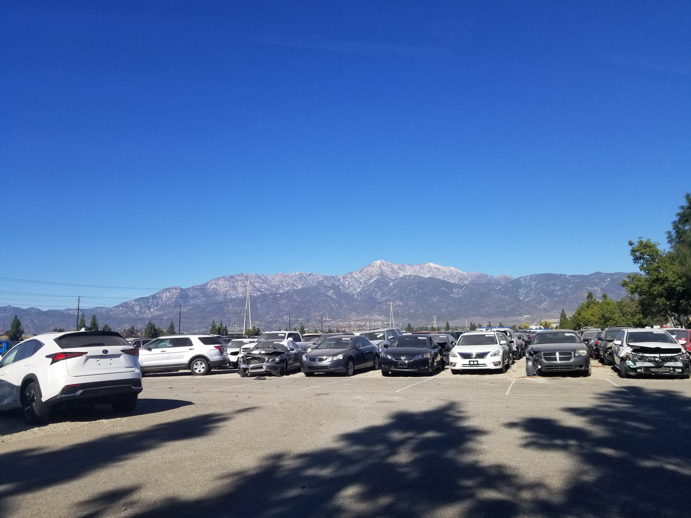
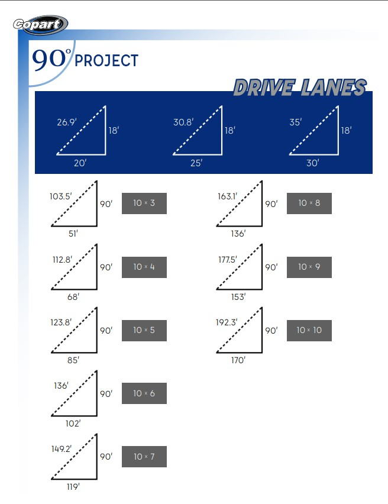

90° Project - Copart
Yard reconfiguration initiative that increased usable capacity by shifting vehicle orientation and improving measurement workflows.
Field visuals and planning references from the 90-degree yard redesign.

